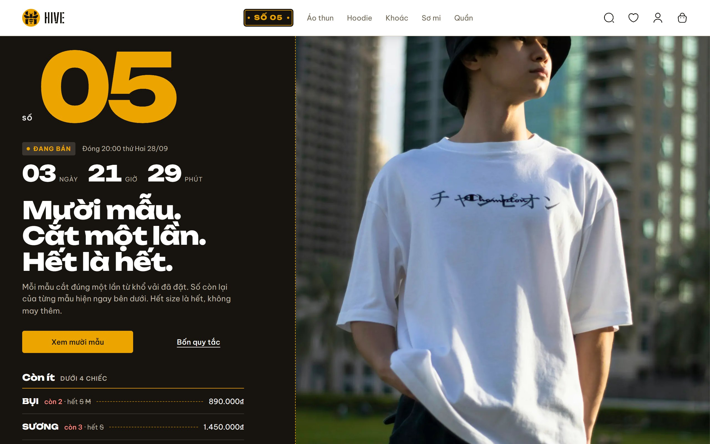

Khi bấm sang trang khác
Đo trên site thật (24/09): bấm một liên kết thì 0,28–0,38 giây sau (Wi-Fi), hoặc 0,41–0,47 giây sau (4G giả lập), trang kế tiếp mới hiện; trong lúc đó trang cũ đứng im, không có gì cho biết cú bấm đã được nhận.

Bấm được ngay trên ảnh: logo, biển Số, “Xem mười mẫu”, “Áo thun”, mẫu KHÓI (rê chuột để thấy viền).
Nên chọn
Đề xuất: Đường may. Ở tốc độ đo được (0,3–0,5 giây) nó đáp lại ngay lúc bấm mà không che gì; logo giữa màn hình ở tốc độ này thành một lần chớp trắng mỗi cú bấm. Sợi chỉ cũng chính là mũi may đang viền bìa Số, nên hệ không thêm một hình mới. Nếu vẫn muốn thấy logo, Cả hai giữ logo cho lúc mạng yếu (chờ quá 1 giây) và để đường may lo phần còn lại.
| Tiêu chí | Hiện nay | Đường may | Logo giữa màn hình | Cả hai |
|---|---|---|---|---|
| Lúc bấm | không có gì | chỉ chạy ngay | lớp trắng sau 0,12 giây | chỉ chạy ngay |
| Ở 0,3 giây (đo được) | trang đứng im | một đoạn chỉ rồi khép lại | màn chớp trắng mỗi lần bấm | như Đường may |
| Ở 3 giây (mạng yếu) | tưởng bấm hỏng | chỉ chạy chậm dần, vẫn thấy đang đi | rõ nhất | chỉ chạy, thêm logo từ giây thứ nhất |
| Trang cũ trong lúc chờ | đọc, bấm được | đọc, bấm được | bị che | bị che nếu quá 1 giây |
Đường may
Sợi chỉ mật ong dày 2 px, mũi may 6 px cách 4 px (cùng kiểu đứt nét viền bìa Số và dấu SOLD OUT), chạy dọc mép dưới thanh điều hướng từ trái sang phải. Thanh dính trên đầu trang, nên cuộn tới đâu sợi chỉ cũng nằm trong tầm mắt. Hình dưới: mép dưới thanh, phóng 3 lần.
Giảm chuyển động (cài đặt của máy): sợi chỉ hiện nguyên đường ngay khi bấm, đứng yên, tắt khi trang về. Bấm link khác giữa chừng thì sợi chỉ chạy tiếp, không quay lại từ đầu.
Logo giữa màn hình
Lớp trắng phủ phần trang dưới thanh điều hướng; giữa là mark HIVE 64 px (56 px trên điện thoại), quanh nó một cung mũi may mật ong chạy vòng. Thanh điều hướng vẫn thấy và bấm được. Trang về nhanh hơn 0,12 giây thì không hiện gì.
Cái giá: ở 0,3 giây đo được, màn hình chớp trắng một lần mỗi cú bấm, và trong lúc chờ trang cũ bị che, không đọc tiếp được. Mark là thêm một mảng mật ong giữa màn (luật Một Sợi Chỉ); chấp nhận được vì nó chỉ sống lúc chờ. Giảm chuyển động: vòng chỉ đứng yên, chỉ có lớp trắng hiện rồi tắt.
Khi làm thật
- Một component client đặt một lần trong
ShopFrame: mọi trang cửa hàng và tài khoản có nó, khu quản trị thì không. - Bắt đầu khi bấm bất kỳ liên kết nội bộ nào, không phải sửa từng
<Link>; bỏ qua liên kết mở tab mới, tải tệp, ra ngoài site, chỉ đổi#, hoặc trỏ đúng trang đang đứng. Bắt cả nút Lùi/Tới của trình duyệt. - Các chỗ đổi trang bằng code (lọc, sắp xếp, tìm kiếm, đặt hàng xong, tra đơn) gọi thẳng hàm bắt đầu của component.
- Xong khi địa chỉ mới đã vào (
usePathname,useSearchParams). Không thêm thư viện: tài liệu Next 16 gợi ý đúng kiểu thanh tiến trình cho route động không cóloading.tsx. - Trình đọc màn hình: sợi chỉ và lớp phủ
aria-hidden;<main aria-busy>trong lúc chờ; Next tự đọc tiêu đề trang mới khi tới. - Không đụng: dữ liệu, các trang,
loading.tsx(kiểu khung trang không chọn). - Không làm trang về nhanh hơn. Máy chủ trả trang mất khoảng 0,17–0,21 giây khi kết nối đã mở; phần còn lại là trình duyệt dựng trang. Muốn nhanh hơn thật phải tải trước (prefetch): việc riêng, có giá — máy chủ dựng trước cả những trang người mua không mở, và số còn hàng có thể là số lúc tải trước.
- Cách đo: Chrome không giao diện, 1280 px, bấm liên kết trên site thật; bốn lượt (trang chủ → Áo thun, danh mục → KHÓI, KHÓI → giỏ, trang chủ → giới thiệu); 4G giả lập là thêm 150 ms độ trễ, 9 Mbps.